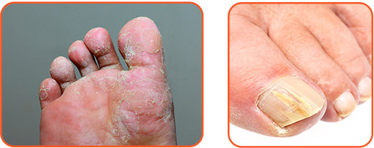
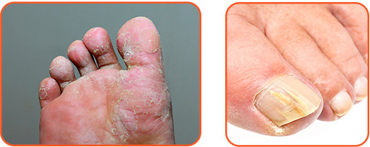

Gombával megfertőződni a következőképpen lehet:
- Közvetlen módon: mezítláb járni a talajon vagy a fűben, ahol gombaspórák lehetnek; beteg személlyel való érintkezés által.
- Közvetett módon: a beteg személy tárgyainak használata által (törölköző, lábbeli, manikűr készlet).
A gombák a meleg nedves környezetet szeretik, ezért a közös öltözők, edzőtermek és medencék is a fertőzés forrásai. Nagyon gyakran fordul elő a családon belüli fertőzés.
A gomba nemcsak esztétikus probléma, hanem nagyon komoly betegség, amely hatással van az emberi szervezetre és megtámadja az immunrendszert.
 
